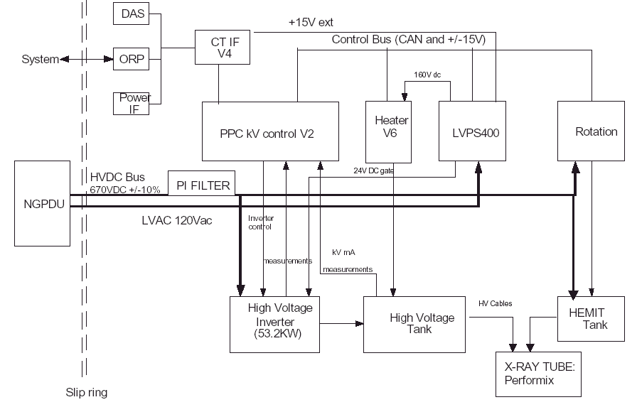

Operating Documentation
Direction 5193755-800, Rev# 8
BrightSpeed (Ltd. Access) Service Methods - Adv
Operating Documentation |
| Last Revised on: | June 20, 2005 |
The X-Ray generation subsystem for Lightspeed 5.x systems is completely different compared to previous Lightspeed products. It is based on the "Jedi" platform. Jedi is the engineering name for a family of compact high frequency X-Ray generators. This generator family covers a wide range of applications from mobile equipment RAD/RF up to this state of the art CT system. The X-Ray generator in this system is capable of operating at a peak power of 53.2kW.
See Illustration 1.
Illustration 1: JEDI 60DC Functional Architecture

The Jedi family is composed of:
High voltage chain composed of kV control, HV power inverter and HV tank
Anode rotation function
Tube filaments heater function
Control bus for communication between the functions
DC bus for power distribution to each function
Input voltage to DC conversion: AC/DC function
Low voltage power supply
Application software, running on the kV control board
These functions are the Jedi core. They are present in all versions of the generator.
A function can be unique for all products or can be derived in several releases based on product specification.
Examples:
Anode rotation function is declined in two releases:
low speed rotation for applications where the tube is a 3000 rpm max tube
high speed/low speed rotation for applications where at least one of the tubes is a 8000-10000 rpm tube. (For Jedi 60DC, only high speed is used.)
Control bus is unique
The X-Ray generation subsystem has the following major FRU's, not including any collimator components.
X-Ray Tube (equipped with the following):
Heat Exchanger
Heat Exchanger Filter
Oil Pump
Three components (Power Unit, Auxiliary Unit, and HEMIT Tank) contain the following major FRU’s:
Table 1: Three Components
| Power Unit | Auxilliary Unit | HEMIT Tank |
|---|---|---|
| -HV tank -HV power inverter -KV control -System Interface -EMC Filter: Ri Filter | -Low Voltage Power Supply (400W) -Heater function (SF/LF) -Rotation function | -Hemit Tank |